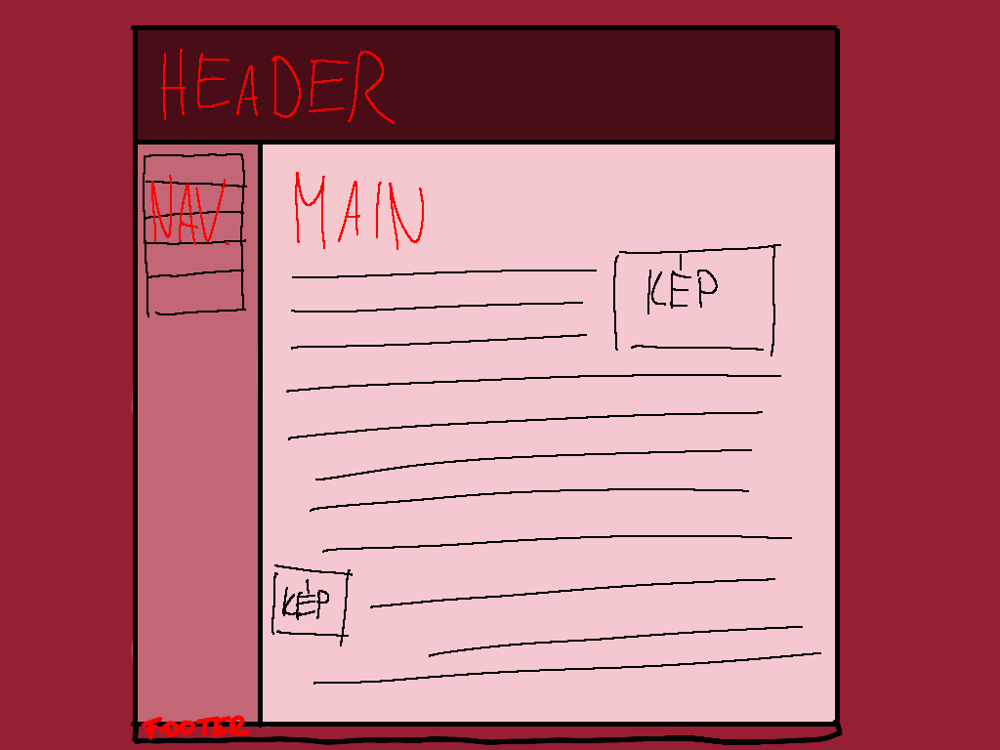

Tartalom
Layout
A layout-ok nagyban megfelelnek az eredeti terveimnek, az egyetlen dolog amivel problémám volt, a menü gombok elhelyezése volt, mert mindig egymásra csúszott a tartalom és a menü. Végül ezt float-tal ki tudtam küszöbölni. Ezután mindenképpen akartam valamilyen váltorást a gombokon amikor az egér rákerül, először csak a behúzásra gondoltam, de sokáig nem tudtam megvalósítani, ezért inkább a háttérszín megváltoztatása mellett döntöttem, de végül rájöttem és úgy döntöttem mindkettőt megtartom.
Az egyetlen dolog amit nem sikerült megoldanom, az a tartalom padding-je, valahányszor probáltam átállítani teljesen szétesett az oldal, de mivel az már csak az oldal esztétikai jellegére van hatással, nem a weboldallal, nem akartam, hogy a többi rész kárára menjen.